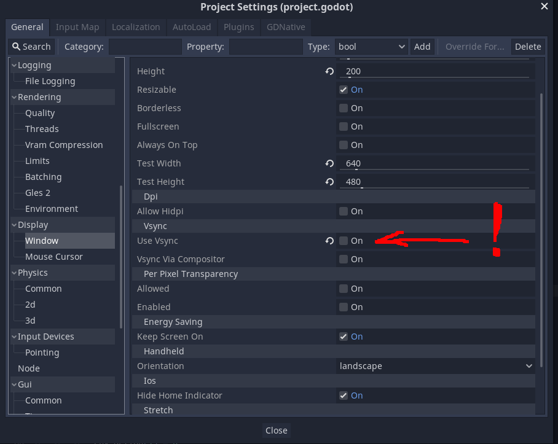
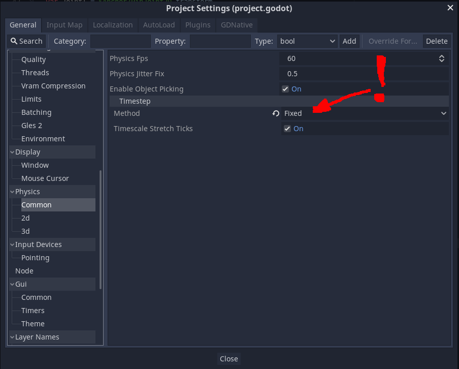

Speedup tutorial
Figure1: Project settings.
 Internal clock
Imagine, that you want to simulate phyics in godot engine with the timestep target_delta. Normally it should be smaller than deltat, that we used in the previous tutorial. In this case we perform deltat/target_delta physics iterations between getting an action and returning the observation. The engine usually assumes that target_delta and deltat correspond to the real time. However, we want to set the scale to the fastest possible, that you can get set using Engine.set_time_scale. The time scale corresponding to the real clock is 1, but we want each frame to perform physics step with target_delta time step. In this case we have to set the time scale to FPS*target_delta.Measuring FPS is a tricky part, because when we are waiting for the next action, the system clock does not stop and the engine thinks that the frame takes the time spent in python script.
Code 1 shows how to mitigate this problem. First we measure the time it takes to free sem_action semaphore. We also measure FPS manually in the _process function and remove the semaphore time from our FPS estimate. Then we set engine iterations per second to our estimate and adjust time scale correspondingly. After this we have to zero the sem_time, so that it does not affect the frames where there's no communication between godot and python.
We designed two unit tests to check that the resulting time scaling does not affect the result of the physics simulation. One can find them here: Tests.
Finally, you need to set Vsync off and physics timestep to fixed (Figure1).
Code 1: Example of time scaling.
var deltat = 0.05
var prev_time = 0.0
var sem_delta = 0.0
var target_delta = 0.025
func _physics_process(delta):
if timeout:
if mem.exists():
var time_start = OS.get_ticks_usec()
sem_action.wait()
var time_end = OS.get_ticks_usec()
sem_delta = time_end - time_start
...
func _process(delta):
if mem.exists():
var cur_time = OS.get_ticks_usec()
var fps_est = 1000000.0/(cur_time - prev_time - sem_delta)
Engine.set_iterations_per_second(fps_est)
Engine.set_time_scale(Engine.get_iterations_per_second()*target_delta)
sem_delta = 0.0
prev_time = cur_time